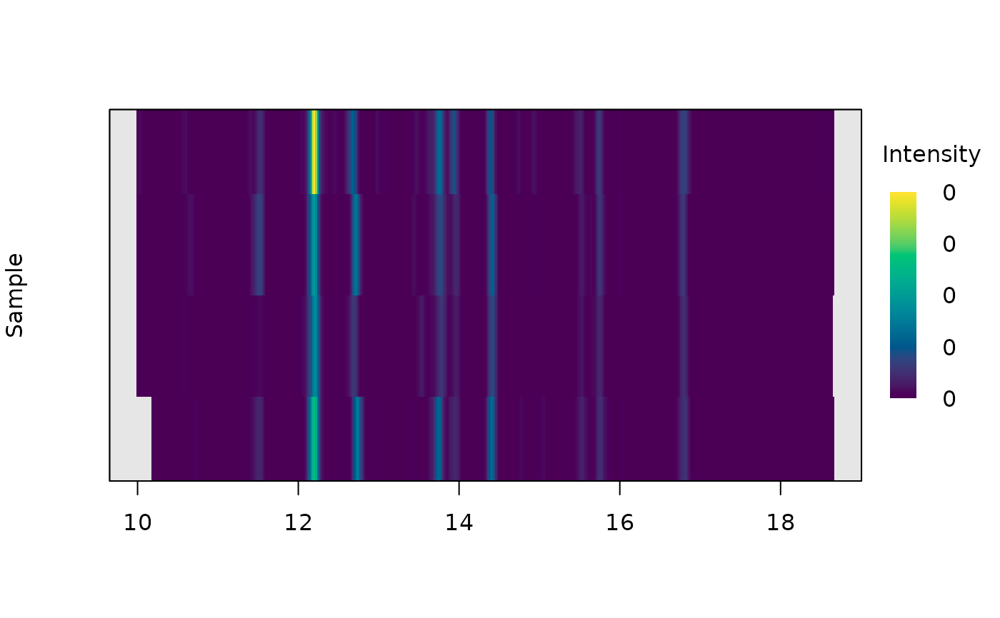

Plots the specified traces from a list of chromatograms as a heatmap.
Usage
plot_chroms_heatmap(
chrom_list,
idx = NULL,
lambdas,
engine = c("base", "ggplot", "plotly"),
show_legend = TRUE,
xlim = NULL,
legend_position = "topright",
title = "",
show_ylabs = FALSE
)Arguments
- chrom_list
List of chromatograms to plot
- idx
A vector representing the names or numerical indices of the chromatograms to plot.
- lambdas
A character or numeric vector specifying the wavelengths to plot.
- engine
- show_legend
Logical. Whether to display legend or not. Defaults to
TRUE.- xlim
Range of x axis.
- legend_position
Position of legend.
- title
Title for plot.
- show_ylabs
Logical. Whether to show y labels. Defaults to
FALSE.
Details
Adapted from plot.VPdtw.
Side effects
Plots the traces of the specified chromatograms idx at the specified
wavelengths lambdas as a heatmap. Plots can be produced using base
graphics engine, ggplot2, or plotly, according to the value of
engine.
See also
Other visualization functions:
boxplot.peak_table(),
mirror_plot(),
plot.peak_list(),
plot.peak_table(),
plot_all_spectra(),
plot_chroms(),
plot_spectrum(),
scan_chrom()
Examples
data(Sa_warp)
plot_chroms_heatmap(Sa_warp, lambdas = 210)
